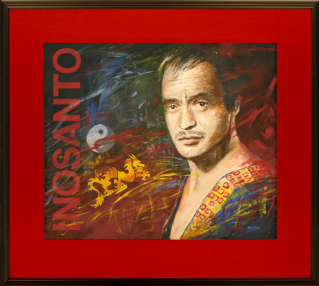
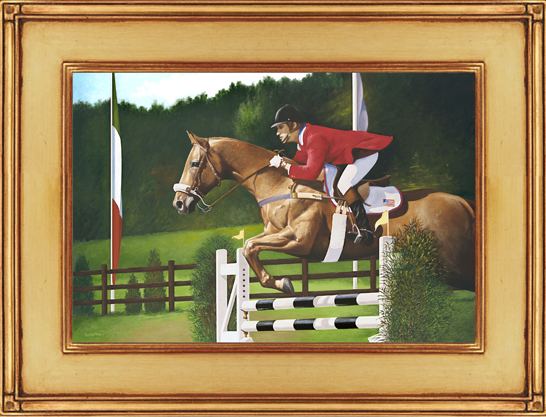
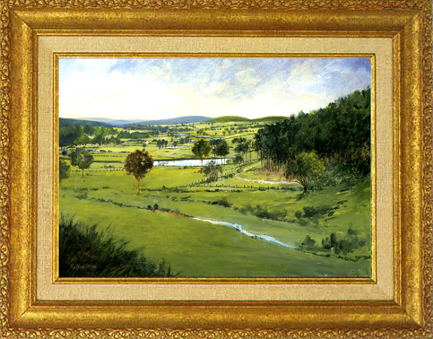
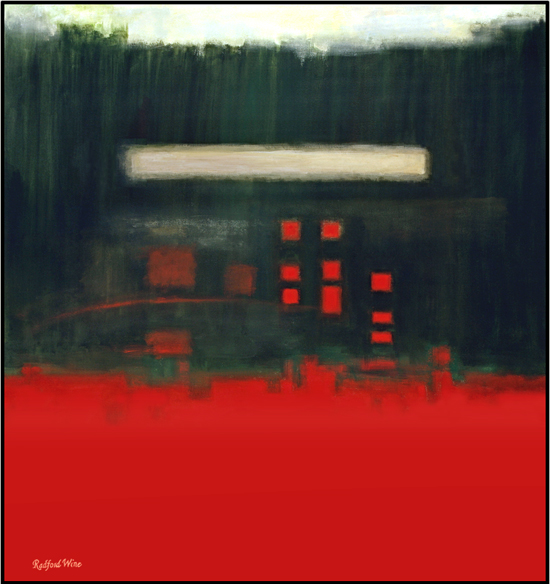
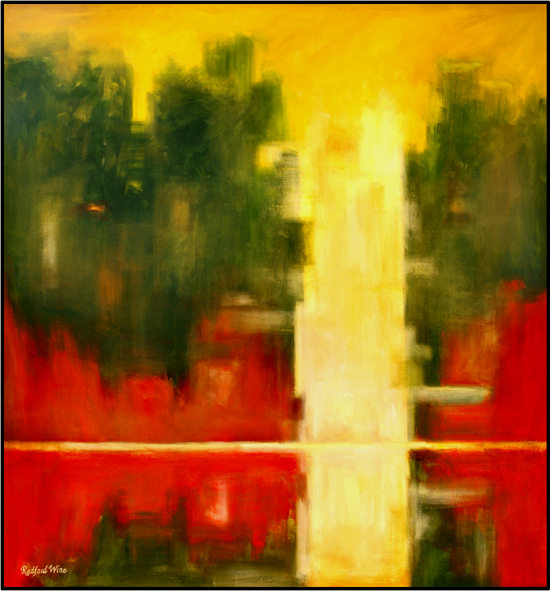
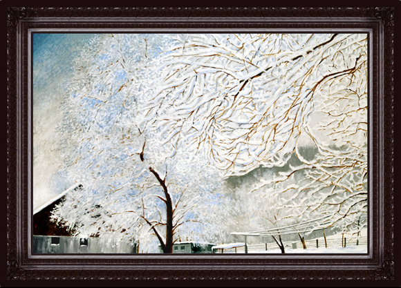
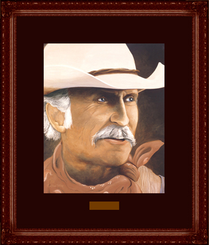

Commissions
{kind=link}

Inosanto
“Dan Inosanto is considered to be one of the finest martial artists in the world. We saw Mr. Wine’s work and asked if he could capture the persona of this individual. We were amazed with the outcome. We consider the portrait “alive” and a great work.”
Michael B.
{kind=link}

Wash Bishop Astride Ask Away
“The work of art created by Radford Wine for me is wonderful! One can almost feel the muscles of the animal as it leaps. Ask Away is one of the greatest horses I have ridden, and I love this original work of art. Radford is articulate and it was a pleasure to work with him.”
Wash Bishop
{kind=link}

Ashby Gap
“Ashby Gap is one of the most beautiful scenes near our home and in the state of Virginia. Radford captured this vista in a beautiful manner and we can actually compare the painting to the land and see nearly every tree that is really there. This made a most wonderful Christmas surprise from us to ourselves.”
Dr. & Mrs. James D.
{kind=link}

A Tribute to Frankenthaler
“We have just completed a custom-built home with a large foyer to welcome our visitors and to set the tone for the areas remaining to be seen. Radford’s work is impeccable. He listened carefully to every word that we and our designer spoke, created schematics (to scale) illustrating how the final works would appear on our walls, and then created exactly what he said he would create. This and an additional original abstract work by Radford complement our entrance perfectly and provide a great visual impact when one enters the hall. Perhaps the best compliment we have received regarding the art is the following, spoken by a recent visitor. “I have never seen a better melding of art and home than this.” These large abstracts measure nearly 5 x 5″ and are flanked by canvas giclees of landscapes created by Radford that provide a perfect juxtaposition to the larger works. We could not be more pleased!”
Mr. and Mrs. Christopher M.
{kind=link}

Reflections
“We have just completed a custom-built home with a large foyer to welcome our visitors and to set the tone for the areas remaining to be seen. Radford’s work is impeccable. He listened carefully to every word that we and our designer spoke, created schematics (to scale) illustrating how the final works would appear on our walls, and then created exactly what he said that he would create. This and an additional original abstract work by Radford complement our entrance perfectly and provide a great visual impact when one enters the hall. Perhaps the best compliment we have received regarding the art is the following, spoken by a recent visitor. “I have never seen a better melding of art and home than this.” These large abstracts measure nearly 5 x 5″ and are flanked by canvas giclees of landscapes created by Radford that provide a perfect juxtaposition to the larger works. We could not be more pleased!”
Mr. and Mrs. Christopher M.
{kind=link}

Winter at the Home Place
“We had never seen a painting by this artist of snow. This is a first! Radford considered this a real challenge, but he came through beautifully. When we first gave the slide to him, he turned pale, (he is not a huge fan of winter) then stated that he would like to do the work. We feel as if we can actually walk down our fence line when viewing this work, and have a special feeling for the old barn that leans a bit more each year. He hand-stained the frame for us to match our room and mantel.”
Mr. & Mrs. Joseph S.
{kind=link}

Robert Duvall as “Gus”
“We commissioned Radford to paint a portrait of our friend Bobby Duvall and were ecstatic with the result. His attention to detail is exemplary and the eyes of the character are amazingly realistic. The same attention was paid to the framing of the work. The suede matting surrounding the image reminds us of the leather saddles the cattlemen sat astride for the long, hard hauls.”
Dr. & Mrs. James A. D.
Contact the artist for an appointment or conversation about commissioning a painting.